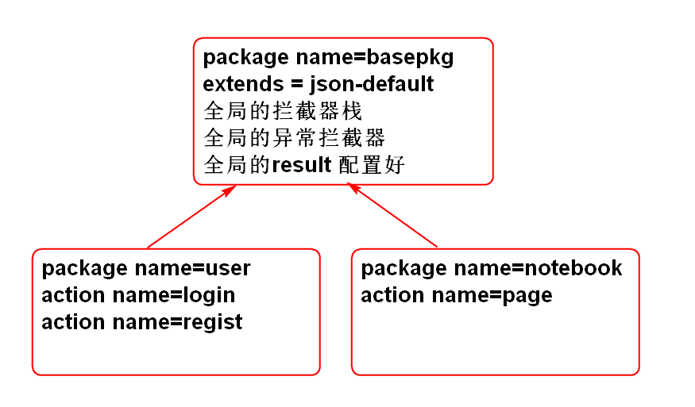

重新异常处理方法即可实现自定义异常处理:
重写异常处理方法 UserAction
@Override
public String handleException(Exception e) {
if(e instanceof UserNotFoundException){
jsonResult = new JsonResult(2, e);
}else if(e instanceof PasswordException){
jsonResult = new JsonResult(3, e);
}else if(e instanceof UserNameException){
jsonResult = new JsonResult(4, e);
}else {
jsonResult = new JsonResult(e);
}
return JSON;
}
映射笔记本实体到数据库表 Notebook.hbm.xml
<?xml version="1.0" encoding="utf-8"?>
<!DOCTYPE hibernate-mapping PUBLIC
"-//Hibernate/Hibernate Mapping DTD 3.0//EN"
"http://www.hibernate.org/dtd/hibernate-mapping-3.0.dtd">
<hibernate-mapping>
<class name="cn.tedu.note.entity.Notebook"
table="cn_notebook">
<id name="id" column="cn_notebook_id"></id>
<property name="name" column="cn_notebook_name"></property>
<property name="typeId" column="cn_notebook_type_id"></property>
<property name="userId" column="cn_user_id"></property>
<property name="desc" column="cn_notebook_desc"></property>
<property name="createtime"
column="cn_notebook_createtime"
type="java.sql.Timestamp"></property>
</class>
</hibernate-mapping>
更新配置文件 spring-hbm.xml:
<property name="mappingLocations">
<list>
<value>classpath:hbm/User.hbm.xml</value>
<value>classpath:hbm/Notebook.hbm.xml</value>
</list>
</property>
实现 NotebookDaoImpl
@Repository("notebookDao")
public class NotebookDaoImpl implements NotebookDao {
@Resource
private HibernateTemplate hibernateTemplate;
public List<Map<String, Object>>
findNotebooksByUserId(String userId) {
final String hql=
"select new map(id as id, name as name) "+
"from Notebook "+
"where userId=? "+
"order by createtime desc";
List<Map<String, Object>> list=
hibernateTemplate.find(
hql, userId);
return list;
}
public int countNotebookById( String notebookId) {
//sql:
// select count(*)
// from cn_notebook
// where cn_notebook_id=?
//hql:
// select count(*)
// from Notebook
// where id=?
String hql = "select count(*) "
+ "from Notebook where id=?";
List<Number> list=hibernateTemplate.find(hql, notebookId);
return list.isEmpty()? 0: list.get(0).intValue();
}
public List<Map<String, Object>> findNotebooksByPage(
final String userId,
final int start,
final int pageSize,
final String table) {
//sql: select cn_notebook_id, cn_notebook_name
// from cn_notebook
// where cn_user_id=?
// order by cn_notebook_createtime desc
//HQL:
// select new map(id as id, name as name)
// from Notebook
// where userId=?
// order by createtime desc
final String hql="select new map(id as id, name as name) "+
"from Notebook "+
"where userId=? "+
"order by createtime desc";
List<Map<String, Object>> list=hibernateTemplate.execute(new HibernateCallback<List<Map<String, Object>>>() {
public List<Map<String, Object>> doInHibernate(Session session) throws HibernateException, SQLException {
//利用session创建查询对象
Query query=session.createQuery(hql);
//绑定 查询参数
query.setString(0, userId);
//绑定分页参数:
query.setFirstResult(start);
query.setMaxResults(pageSize);
//query.list() 执行查询
//返回查询结果
return query.list();
}
});
return list;
}
}
单元测试: 对持久层和业务层进行回归性测试
...
创建控制器 NotebookAction
@Controller
@Scope("prototype")
public class NotebookAction
extends AbstractAction {
@Resource
private NotebookService notebookService;
private String userId;
private Integer page;
public String getUserId() {
return userId;
}
public void setUserId(String userId) {
this.userId = userId;
}
public Integer getPage() {
return page;
}
public void setPage(Integer page) {
this.page = page;
}
public String page(){
List<Map<String, Object>> list=
notebookService.listNotebooks(userId, page);
jsonResult = new JsonResult(list);
return JSON;
}
public String list(){
List<Map<String, Object>> list=
notebookService.listNotebooks(userId);
jsonResult = new JsonResult(list);
return JSON;
}
}
配置控制器:
配置文件结构:

配置文件内容重构: struts.xml
<?xml version="1.0" encoding="UTF-8"?>
<!DOCTYPE struts PUBLIC
"-//Apache Software Foundation//DTD Struts Configuration 2.3//EN"
"http://struts.apache.org/dtds/struts-2.3.dtd">
<struts>
<!-- 修改请求扩展名 action改为do -->
<constant name="struts.action.extension" value="do"></constant>
<package name="basepkg" extends="json-default">
<interceptors>
<interceptor name="demo" class="myInterceptor"/>
<interceptor name="execInte" class="exceptionInterceptor"/>
<interceptor-stack name="noteStack">
<interceptor-ref name="defaultStack"/>
<interceptor-ref name="execInte"></interceptor-ref>
</interceptor-stack>
<interceptor-stack name="demoStack">
<interceptor-ref name="defaultStack"/>
<interceptor-ref name="demo"></interceptor-ref>
</interceptor-stack>
</interceptors>
<default-interceptor-ref name="noteStack"/>
<global-results>
<result name="json" type="json">
<param name="root">jsonResult</param>
</result>
</global-results>
</package>
<package name="user" namespace="/user" extends="basepkg">
<action name="login" class="userAction" method="login"/>
<action name="regist" class="userAction" method="regist"/>
</package>
<package name="notebook" extends="basepkg"
namespace="/notebook">
<action name="page"
class="notebookAction"
method="page"/>
<action name="list"
class="notebookAction"
method="list"/>
</package>
</struts>
对控制器进行测试, 对页面功能进行测试
Hibernate的结构:
Session 提供了CRUD 功能
Hibernate 持久化对象生存周期状态管理

Java Bean == POJO
案例:
public class HibernateTest extends BaseTest {
SessionFactory factory;
Session session;
@Before
public void initSession(){
factory = ctx.getBean("sessionFactory",
SessionFactory.class);
session = factory.openSession();
}
@After
public void destory(){
session.close();
factory.close();
}
@Test
public void testSessionFactory(){
//Spring 简化了 Session Factory 的关联
SessionFactory factory =
ctx.getBean("sessionFactory",
SessionFactory.class);
//利用SessionFactory创建Session
Session session = factory.openSession();
System.out.println(session);
session.close();
System.out.println(factory);
}
@Test
public void testSave(){
Transaction tx=session.beginTransaction();
//持久状态下,更改属性影响到数据库
//user 对象 是临时状态的
User user = new User(
"1234567", "熊大", "1234", "", "");
//user成为持久状态
session.save(user);
user.setName("范传奇");
user.setPassword("abcde");
tx.commit();
}
@Test
public void testGet(){
Transaction tx=session.beginTransaction();
//get返回对象是持久状态的
User user = (User)session.get(
User.class, "1234567");
System.out.println(user);
//更改持久创建对象的属性影响数据库
user.setName("李洪鹤");
tx.commit();
}
@Test
public void testEvict(){
Transaction tx = session.beginTransaction();
//get返回的对象是持久状态
User user = (User)session.get(
User.class, "1234567");
System.out.println(user);
//evict将对象清除 sessin缓存, 变成游离状态
session.evict(user);
//session.clear();
user.setName("光头强");
tx.commit();
}
@Test
public void testUpdate(){
Transaction tx = session.beginTransaction();
//get返回的对象是持久状态
User user = (User)session.get(
User.class, "1234567");
System.out.println(user);
//evict将对象清除 sessin缓存, 变成游离状态
session.evict(user);
//session.clear();
user.setName("光头强");
//update 方法 将对象从游离状态改为持久状态
session.update(user);
tx.commit();
}
@Test
public void testDelete(){
Transaction tx = session.beginTransaction();
//get返回的对象是持久状态
User user = (User)session.get(
User.class, "1234567");
System.out.println(user);
//delete方法将数据从数据库删除,
// 对象user在内存中还有数据
// 此时对象是临时状态的!
session.delete(user);
System.out.println(user);
tx.commit();
}
@Test
public void testLoad(){
//get方法在没有数据时候, 返回null
User user = (User)session.get(
User.class, "1234567");
System.out.println(user); //null
//load方法在没有数据时候, 抛出异常
User u = (User) session.load(
User.class, "1234567");
System.out.println(u);
}
@Test
public void testQuery(){
//执行HQL查询
Transaction tx=session.beginTransaction();
//sql: select * from cn_user
String hql = "from User";
Query query=session.createQuery(hql);
//list 执行返回一组数据的查询
List<User> list = query.list();
for (User user : list) {
System.out.println(user);
}
tx.commit();
}
@Test
public void testQuery2(){
//执行带参数的SQL
//sql: select * from cn_user
// where cn_user_name like ?
String hql = "from User "
+ "where name like ?";
Transaction tx = session.beginTransaction();
Query query=session.createQuery(hql);
//绑定查询参数
query.setString(0, "%o%");
//执行查询
List<User> list=query.list();
for (User user : list) {
System.out.println(user);
}
tx.commit();
}
@Test
public void testQuery3(){
//按照名字绑定参数
String hql = "from User "
+ "where name like :name";
Transaction tx = session.beginTransaction();
Query query=session.createQuery(hql);
//绑定查询参数
query.setString("name", "%o%");
//执行查询
List<User> list=query.list();
for (User user : list) {
System.out.println(user);
}
tx.commit();
}
@Test
public void testQuery4(){
//query 支持唯一结果查询
Transaction tx = session.beginTransaction();
String hql = "from User where name=?";
Query query = session.createQuery(hql);
query.setString(0, "demo");
//uniqueResult 用于查找返回唯一的结果
User user = (User)query.uniqueResult();
System.out.println(user);
user.setToken("123456");
tx.commit();
}
@Test
public void testFindPerson(){
String hql = "from Person";
Query query = session.createQuery(hql);
List<Person> list = query.list();
for (Person person : list) {
System.out.println(person);
}
}
@Test
public void testAddPerson(){
Person person = new Person(null, "Wang");
System.out.println(person);
Transaction tx = session.beginTransaction();
session.save(person);
System.out.println(person);
tx.commit();
}
@Test
public void testFindComment(){
String hql = "from Comment";
Query query = session.createQuery(hql);
List<Comment> list = query.list();
for (Comment comment : list) {
System.out.println(comment);
}
}
@Test
public void testFindPost(){
String hql = "from Post";
Query query = session.createQuery(hql);
List<Post> list = query.list();
for (Post p : list) {
System.out.println(p);
}
}
}
映射文件:
Person.hbm.xml
<?xml version="1.0" encoding="utf-8"?>
<!DOCTYPE hibernate-mapping PUBLIC
"-//Hibernate/Hibernate Mapping DTD 3.0//EN"
"http://www.hibernate.org/dtd/hibernate-mapping-3.0.dtd">
<hibernate-mapping>
<class name="cn.tedu.note.entity.Person"
table="p_person">
<id name="id" column="id">
<!-- 使用自增类型的主键生成器 -->
<generator class="identity"/>
</id>
<property name="name" column="name"/>
</class>
</hibernate-mapping>
Comment.hbm.xml
<?xml version="1.0" encoding="utf-8"?>
<!DOCTYPE hibernate-mapping PUBLIC
"-//Hibernate/Hibernate Mapping DTD 3.0//EN"
"http://www.hibernate.org/dtd/hibernate-mapping-3.0.dtd">
<hibernate-mapping>
<class name="cn.tedu.note.entity.Comment"
table="p_comment">
<id name="id" column="id">
<!-- 使用自增类型的主键生成器 -->
<generator class="identity"/>
</id>
<property name="title" column="title"/>
</class>
</hibernate-mapping>
Post.hbm.xml
<?xml version="1.0" encoding="utf-8"?>
<!DOCTYPE hibernate-mapping PUBLIC
"-//Hibernate/Hibernate Mapping DTD 3.0//EN"
"http://www.hibernate.org/dtd/hibernate-mapping-3.0.dtd">
<hibernate-mapping>
<class name="cn.tedu.note.entity.Post"
table="p_post">
<id name="id" column="id">
<!-- 使用自增类型的主键生成器 -->
<generator class="identity"/>
</id>
<property name="title" column="title"/>
<!-- 多个post对应一个person -->
<!-- 其中: 属性是person, 属性的类型是Person
属性对应的表格列是 person_id -->
<many-to-one name="person"
class="cn.tedu.note.entity.Person"
column="person_id" >
</many-to-one>
<set name="comments" >
<!-- p_comment 表中的 外键列 post_id-->
<key column="post_id"></key>
<!-- 当前一个(one)帖子对应多个(many)回复 -->
<one-to-many
class="cn.tedu.note.entity.Comment"/>
</set>
</class>
</hibernate-mapping>
模式: 解决问题的固定套路
单例: 在软件中永远唯一的对象个体.
单例模式: 解决 在软件中永远唯一的对象个体 固定套路
注意: Spring 中的Bean默认情况下是 "单例"的, 但是不能称为单例模式!!
//"饿汉式" 立即加载模式
class Girl{
private static Girl instance = new Girl();
private Girl(){
}
public static Girl getInstance() {
return instance;
}
}
//"懒汉式" 按需加载
class Boy{
private static Boy instance;
private Boy(){
}
public synchronized static Boy getInstance() {
if(instance == null){
instance = new Boy();
}
return instance;
}
}